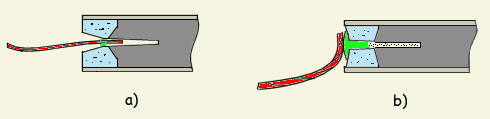
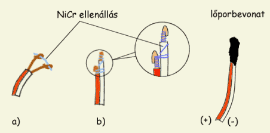
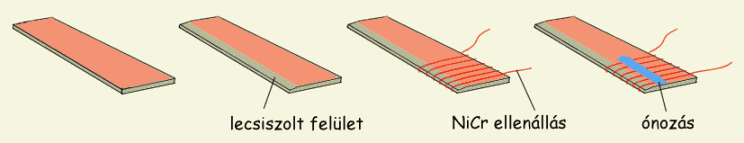
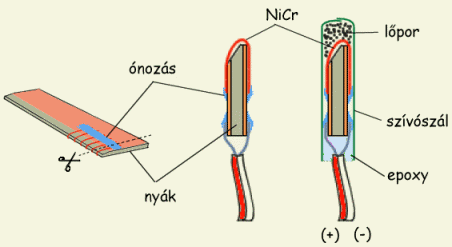
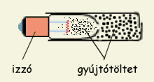
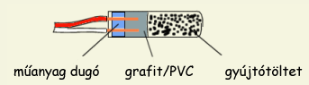

Gyújtózsinórból, ha van rá lehetőség, legjobb gyárit beszerzni. Nem nehéz ugyan házilag előállítani, de ez minőségben nagyon alulmarad a gyári változattal szemben. A gyári gyújtózsinór rugalmas, vízálló és megbízható, ráadásul a legtöbb országban engedély nélkül kapható. Számtalan leírást találtam már házi gyújtózsinórkészítésről, de az eredmény mindig törékeny és nedvességre érzékeny gyújtózsinór.
A házi gyújtózsinórok lőporbevonattal ellátott pamutszálból állnak. A pamutszálat előzetesen telített kálimnitrát oldatban kell áztatni néhány óráig, majd megszárítani. Időközben lőporból és dextrinoldatból egy tejföl sűrűségű masszát kell keverni, majd a szárított pamutszálakat ebbe mártani (ha nincs dextrin, keményítőoldat is megteszi, de akár lisztből is lehet főzni ragacsot hozzá). Hogy a bevonat egyenletes legyen, a szálat egy 2 - 3 mm-es lyukon kell áthúzni, így a fölösleg lemarad. Jó sokáig szárad, egy - másfél nap is kell a teljes kiszáradásig. Szárítás után kb. 1 cm/s sebességgel fog égni. Ha nem ég elég jól, még egy rendben be kell vonni az előbbi masszával. Az így készített gyújtózsinórok elég megbízhatóak, a legerősebb szél sem képes kioltani őket. Sajnos könnyen eltörnek, és a nedvességet sem bírják.
Alternatív megoldás házi gyújtózsinórkészítésre a papírba sodort lőpor. Erre a célra nagyon vékony papírt kell használni, amihez legkönnyebben egy papírzsepi rétegekre bontásával jutunk. Ezt a szivarpapírnál is vékonyabb papírszeletet kettőbe kell hajtani, majd hosszan beleszórni egy kevés lőport és össze kell sodorni. A sodrást célszerű két kissé nedves mosogatószivacs (a gumírozott fajtából) között végezni, így nagyon szorosra lehet sodorni. Az így készített gyújtózsinór valamivel gyorsabban ég mint az előző, és nem törékeny. Sajnos ez sem vízálló.
A legjobbnak tűnő megoldás a nitrolakkos papírba sodort lőpor. Nagyon vékony papírt (egy réteg papírzsepi) nitrolakkal bekenünk majd finomra őrölt lőport szórunk rá és jól összesodorjuk. Igyekszünk jó szorosra és vékonyra sodorni. Fontos a jóminőségű lőpor használata, viszonylag magas KNO3 tartalommal. Legalább két napi szárítást igényel. Az így készített gyújtózsinór lassabban ég mint az előbb leírtak, nem törékeny és valamennyire vízálló is. Még jobb eredményt érhetünk el, ha a használt papírt előzőleg telített káliumnitrát oldatban áztatjuk és szárítjuk.
|  |
| 1. Ábra: gyújtózsinór rögzítése túl tág illetve túl szoros fúvókában |
A gyújtózsinór rögzítése: akkor szükséges, ha a fúvóka vagy az égéscsatorna átmérője túl nagy ahhoz, hogy a gyújtózsinór megszoruljon benne. Ilyenkor legjobb ha valamilyen műanyagragasztó és lőpor keverékéből kis bogyót formázunk a gyújtózsinórra, amely majd beleszorul a fúvókába vagy a kónikus égéscsatornába (1. Ábra/a). A bogyó azért kell éghető legyen, hogy ne állítsa le a gyújtózsinór égését. Nagyon jó erre a célra a lőpor/celluloid massza, amely kiválóan ég és nagyon gyorsan szárad. Kereskedelmi gyújtózsinór használata esetén nem áll fenn a kialvás veszélye, ezért azt akár egy darab papírral is beleszoríthatjuk a fúvókába.
Gondot okozhat az ellenkező eset is, ha a fúvóka átmérője túl kicsi, semhogy a gyújtózsinór beleférjen (1. Ábra/b). Ilyen helyzetbe A-kategóriás vagy kisebb motrok használatakor kerülhetünk, ezek fúvókája ugyanis általában 2 mm-nél kisebb átmérőjű. Ilyenkor egy kevés lőport kell a fúvókába szórni, majd a lőpor/celluloid masszával betömni a fúvókát, egyféle "gyújtódugaszt" képezve. A gyújtózsinórt így nem kell bevezetni a motorba, elég például szigetelőszalaggal a betömött fuvókanyíláshoz rögzíteni, mert a "dugó" majd beég az üzemanyagig.
Az elektromos gyújtószerkezet központi része egy ellenállás, amely kiizzik amint áramot adunk rá. Amatőr gyakorlatban leginkább a hajszárítókban is használt NiCr huzal az elterjedt, ritkábban pedig az elektromos izzók wolframszála. Tulajdonképpen egy darab igen vékony drót is felhasználható, feltéve hogy nem túl hosszú és elég nagy feszültséggel/áramerősséggel dolgozunk (pl. autóakkumulátor). Külön kategóriát alkotnak azok a gyújtók, ahol az ellenállást két elektromos vezeték közti grafit/PVC keverék képezi. A továbbiakban mindhárom megoldásrol részletesebb leírás található.
A NiCr ellenállás azért elterjedt, mert könnyen hozzá lehet jutni. Egy régi hajszárító vagy villanytűzhely ideális forrás. Mivel néhány cenitméter elég egy gyújtóhoz, egy "hajszárítónyi" NiCr huzal hosszú időre elegendő. Minél rövidebb ellenállást alkalmazunk, annál kisebb feszültseg kell a kiizzításához. A "háztartási" NiCr ellenállásokról általánosan elmondható, hogy egy 5 - 10 mm hosszú darabot már két ceruzaelem is képes kiizítani.
|  |
| 2. Ábra: NiCr szál rögzítése |
A NiCr huzal legnagyobb hátránya, hogy elég körülményes az elektromos vezetőkhöz rögzíteni, ugyanis a hagyományos forrasztóón nem tapad hozzá. A 2. Ábra a) pontja egy egyszerű megoldást mutat, amely megkönnyíti a forrasztást. A vezetékek végét visszatűrjük, majd az így képzett két kis lyukon átdugjuk az ellenállásunkat. Ezután már forrasztható, az ón továbbra sem tapad hozzá, de "megcsípi", így jó érintkezést biztosít.
Az ábra b) pontja egy másik megoldást mutat a NiCr szál rögzítésére: a két elektromos vezetéket nem egyenlő hosszúságúra vágjuk, így a műanyag szigetelés megakadályozza hogy egymáshoz érjenek. Ezután a NiCr huzalt rácsavarjuk a lecsupaszított végekre, majd ezeket visszatűrjük, hogy az ellenállás rögzítve legyen. Ebben a fázisban próbálkozhatunk forrasztással is, mert az ón valószínuleg "befutja" az ily módon előkészített NiCr/rézdrót illesztést.
Mivel az ellenállás nagyon gyorsan elég amint ráadjuk a gyújtófeszültséget, egy gyújtókeverékkel szükséges bevonni, ami tovább ég és begyújtja a motrot. Legegyszerűbb, ha lőporbevonattal látjuk el elektromos gyújtónkat, mivel ez könnyen meggyullad és elegendő láng meg hő keletkezik az égésekor. Ilyen lőporbevonatot igen könnyen készíthetünk ha a lőport pl. nitrolakkal keverjük, majd az így keletkezett masszába mártjuk az ellenállást. Még jobb talán a celluloid/lőpor keverék, ami a következőképpen készül: celluloidot (pingponglabda) acetonban (körömlakkoldó) oldunk, majd összekeverjük a finomőrlésű lőporral, így egy viszkózus fekete latyakot kapunk, amibe már csak bele kell mártani a gyújtókat. Jó sietni, mert az aceton gyorsan párolog, tehát igen hamar megkeményedhet a keverék. Száradás után megismételhetjük a procedúrát, hogy vastagabb gyújtóréteget kapjunk. Egy ily módon elkészített gyújtó a fenti ábrán látható. Tanácsos a kész gyújtókat száradás után egy réteg celluloiddal is bevonni, vizállósítás céljából. (Megj: a celluloid elég lassan oldódik az acetonban, legjobb kis darabokra vágni, majd egy lezárható üvegbe tenni és leönteni acetonnal. Egy-két óra alatt megduzzad, majd kb. egy fél nap alatt teljesen feloldódik. Az eredmény egy fehér, viszkózus folyadék)
Alternatív megoldás NiCr gyújtóhoz: ezzel a módszerrel elég gyorsan nagy mennyiségű gyújtót gyárthatunk. Az interneten találtam erre az ötletes megoldásra. Szükséges hozzá a nyomtatott áramkörök gyártásához használt mindkét oldalán rézbevonatú műanyaglap, amit egyszerűen "nyák"-nak fogok ezentúl titulálni. A folyamat lépéseit a mellékelt ábrán láthatjuk:
|  | 3. Ábra: elektromos gyújtás készítésének lépései nyomtatott áramköri lapból |
1) vágunk egy 2 - 3 cm széles csíkot a nyákból; 2) kb. egy fél centiméteren lecsiszoljuk a rezet a nyák egyik oldalán; 3) az ellenállást fél centis lépéssel felcsavarjuk a lapkára; 4) forrasztóónnal rögzítjük a spirálban felcsavart ellenállást, a fenti ábrán látható módon, mindkét oldalon; 5) hosszan levágjuk a forrasztás utáni részen az ellenállást, majd fél centis sávokra vágjuk a lemezt. Ily módon sok kis elektromos gyújtóhoz jutunk; 6) az elektromos vezetőket a rézbevonathoz forrasztjuk;
|  |
| 4. Ábra: Feldarabolt és szívószálba bújtatott nyák-gyújtó |
Szívószáltól függően 4 - 5 mm átmérőjű vízálló gyújtókhoz jutunk ezzel az eljárással. A szivószál helyett természetesen alkalmazhatjuk az előző megoldást is, azaz celluloid/lőpor keverékkel vonhatjuk be a gyújtókat. Ennek leginkább akkor látjuk előnyét, ha gyújtónk kis átmérőjű fúvókába kell majd beférjen. Amennyiben a gyújtó valamilyen nehezen gyulladó üzemanyag (pl. kompozit vagy KNO3/szorbitol hajtóanyag) égését kell majd beindítsa, lőpor helyett valamilyen alumíniumtartalmú gyújtókeveréket használunk
A nyák-gyújtó készítése még gazdaságosabb (és természetesen gyorsabb) ha a nyák mindkét szélét lecsiszoljuk, így két sor, egymásnak háttal lévő gyújtóhoz jutunk. Ez esetben a 4. lépésben a teljes rézfelületet beónozzuk, majd az 5. lépésben középen hosszában elvágjuk a nyákot, igy különválasztjuk a két sor gyújtót. Ezután a fentiekhez hasonló módon járunk el.
A wolframszál használata nem igazán elterjedt amatőr körökben,
|  |
| 5. Ábra: Karácsonyfaizzó-gyújtó |
Wolframszálat sokan a horgászboltban kapható csukaelőkéből termelnek ki. Személyes tapasztalatom sajnos nincs ezzel kapcsolatban, de állítólag gazdaságos módszer és az "előke-gyújtó" nagyon könnyen kiizik. A wolframszálat a NiCr gyújtók készítésénél tárgyalt módon lehet az elektromos vezetőkhöz rögzíteni és gyújtóbevonattal ellátni.
A "hídnélküli" (szabad fordítás rulez :-)) gyújtókban az ellenállást két elektromos vezeték közti grafit/PVC keverék képezi. Az vezetőket úgy rögzítjük, hogy kb 4-5 mm távolság legyen a végük között, majd PVC-ragasztóval kevert grafitport öntünk rá. Teljes kiszáradás után használható. Az így kapott gyújtó meglehetősen nagy áramot igényel (autóakkumulátor), ellenállása nagyban függ a PVC/grafitpor aránytól. Túl nagy grafittartalom alacsony ellenállással jár, míg ta túl sok PVC a vezetőképesség teljes elvesztéséhez vezethet. Sajnos nem tudok pontos receptet írni, mert még sosem próbáltam ezt a típusú gyújtót. Egy dolog biztos: minél közelebb van a két vezeték vége egymáshoz, annál könnyebben kiizzik a köztük lévő grafit. Gyújtótöltetet a már tárgyalt módon adunk hozzá. Egy ilyen gyújtó metszete a lenti ábrán látható.
|  | 6. Ábra: PVC/grafit vagy más néven "hídnélküli" gyújtó metszete |
Megj: a gyújtótöltet mennyisége motronként változik és általában a motor leírásánál van megadva. Anyaga normál esetben lassú égésű szemcsés lőpor, amely elég hosszú ideig ég ahhoz, hogy begyújtsa a motrot. A lőporos motrokban használt üzemanyagok szemcsés változata általában megfelel erre a célra. Nehezen gyulladó üzemanyagok gyújtására magas hőmérsékleten égő alumíniumtartalmú gyújtókeveréket használunk.